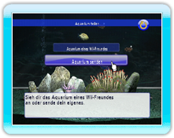
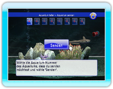

16 |
Aquarium Modus teilen |
 |
|
"Aquarium teilen" aus dem Hauptmenü wählen, um den Aquarium-Teilen-Modus zu betreten. Du kannst die Aquarien von deinen Wii-Freunden ansehen und auch an Wii-Freunde selber welche schicken.
Zeigt eine Liste von Aquarien an, die du von Wii-Freunden erhalten hast, und befindet sich an der Wii-Pinnwand. Wähle und bestätige das Aquarium aus der Liste, das du ansehen möchtest.

Ein Liste an registrierten Spitznamen wird in deinem Adressbuch angezeigt. Wähle einen Wii-Freund, an den du das Aquarium senden möchtest und bestätige dies.
Wähle die Aquariumnummer und drücke "Senden", um es zu verschicken.
|
 |
 |
 |